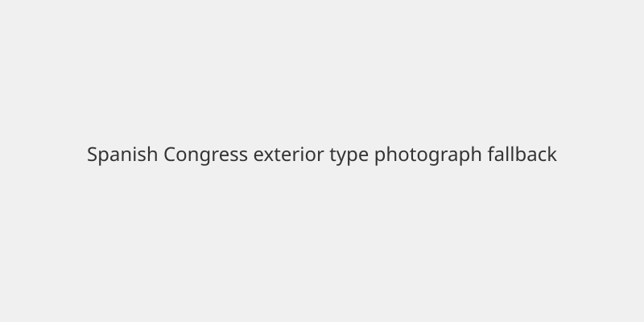

España · Elecciones · 9 de noviembre de 2026
Las encuestas del 29N mantienen a PP y Vox con mayoría absoluta en el Congreso
_01.jpg)
Lo que coinciden los medios
Encuestas publicadas el 8 y 9 de noviembre por 40dB, SocioMétrica y Sigma Dos proyectan que el Partido Popular y Vox sumarían entre aproximadamente 190 y 202 escaños en el Congreso de los Diputados de 350. El umbral de mayoría absoluta es 176. El PP aparece como primera fuerza con alrededor del 31-32 % de la intención de voto; el PSOE se sitúa entre el 26 y el 30 %. Vox se mueve en torno al 18-19 %. Los sondeos coinciden en que el bloque de la derecha superaría la mayoría absoluta si se mantienen estas cifras.
Lo que es solo cita o estimación
Las proyecciones de escaños son modelos de los institutos a partir de muestras online o telefónicas; no son resultados electorales. Los trasvases de voto (por ejemplo, de antiguos votantes del PP hacia Vox o del PSOE hacia el PP) son estimaciones de los sondeos. Las diferencias entre institutos en el número exacto de escaños del PSOE (alrededor de 105-119) muestran el margen de incertidumbre habitual a tres semanas de la votación.
Mecanismo e historia
El presidente Pedro Sánchez disolvió las Cortes y convocó elecciones generales para el 29 de noviembre de 2026. En 2023 el PP fue la fuerza más votada pero no alcanzó la mayoría; el PSOE formó gobierno con apoyos. La izquierda no ha logrado una lista única en esta ocasión. Los sondeos se publican con ficha técnica (tamaño de muestra, margen de error). Una mayoría de PP+Vox permitiría investir a un candidato de la derecha sin necesidad de apoyos adicionales de formaciones nacionalistas en la mayoría de los escenarios modelados.
Lo que no es la historia
Ninguna encuesta es un resultado. El CIS u otros institutos pueden publicar cifras distintas. La abstención, el voto joven y los últimos días de campaña pueden alterar las proyecciones. No se ha producido aún el debate electoral ni la votación.

Artículos fuente y puntuaciones
| Medio | Titular | T | N | C |
|---|---|---|---|---|
| Reuters | Spain's right well ahead in polls for November 29 election | 96 | 0 | 100 |
| Spain in English | Spain’s right retains clear majority in poll as Socialists close gap on PP | 95 | 0 | 98 |
| Polling Forecast | Spain election polls and seat forecast | 90 | 0 | 95 |